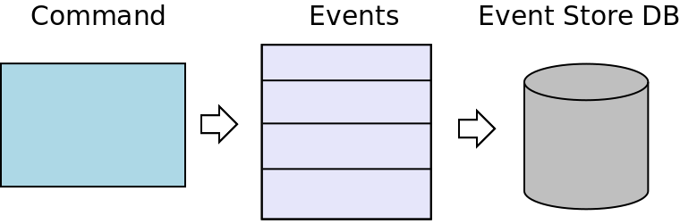
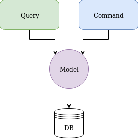
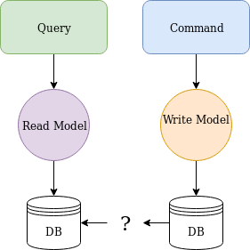
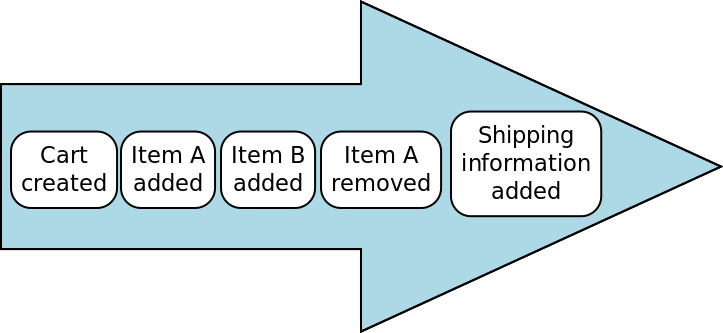
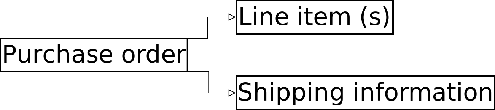
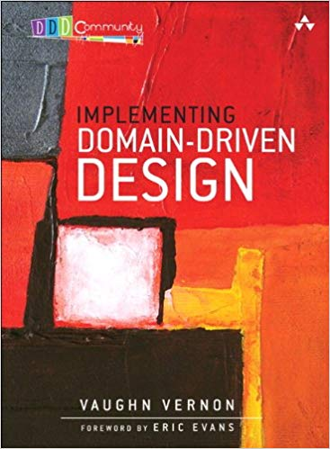

prooph/micro + FPP
less is more
Sascha-Oliver Prolic
prooph components maintainer
Also:
- HumusAmqp
- FPP
- zfr-oauth2-server
- zfc-rbac
prooph/micro
functional event sourced microservices| more: | Event Sourcing |
| less: |
Event Sourcing
Event Sourcing ensures that all changes to application state are stored as a sequence of events.
(Martin Fowler)
Event-Store
How to query an event stream efficiently?
C ommand
Q uery
R esponsibility
S egregation
CRUD
CQRS
Check prooph/event-store docs for more information about projections
Why ???
Consider an online shop with cart
A structural view of an order
New task
I need all items that were removed from the cart 5 mins before checkout.
Event-Sourcing Pros
Append only (very fast)
Immutable
No joins
Complete history
Event-Sourcing Cons
Not really
Overkill for simple CRUD apps
| prooph/micro | |
| uses: | phunkie & prooph event-store |
OOP approach
Boilerplate!
functional approach
Compose all the things
Let's do it
See the difference?
- No Handler classes
- No factories
- No controllers
- No DI containers
- No aggregate repository
- Much less boilerplate
prolic/fpp
Functional PHP Preprocessor
Immutable Data Type Generator
Boilerplate!
Stats
32 lines of fpp code
483 lines of PHP code
No need to write tons of tests
prooph/micro & fpp
the perfect combo
prooph/micro -> functional programmingfunctional programming -> immutable data types
fpp -> immutable data types
What's next?
prooph/micro + amphp
prooph/micro + reactphp
prooph/micro + zend expressive + swoole
Response times of 1ms
Yes really!
Further reading
- getprooph.org
- github.com/prooph/proophessor-do
(CQRS & ES in action, OOP style, not micro) - join the community: gitter.im/prooph/improoph
The blue book

The red book
Thank You!
Contact
Github: @prolic
Twitter: @sasaprolic
prooph-chat: gitter.im/prooph/improoph